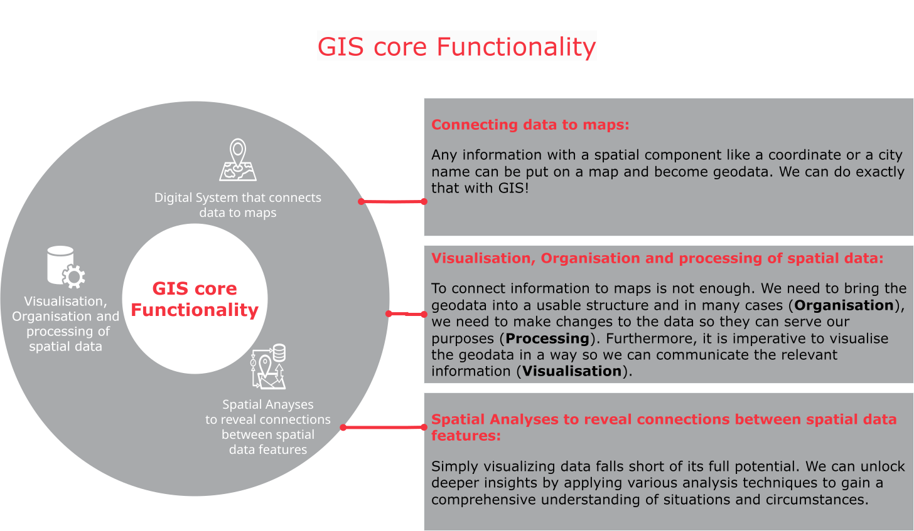
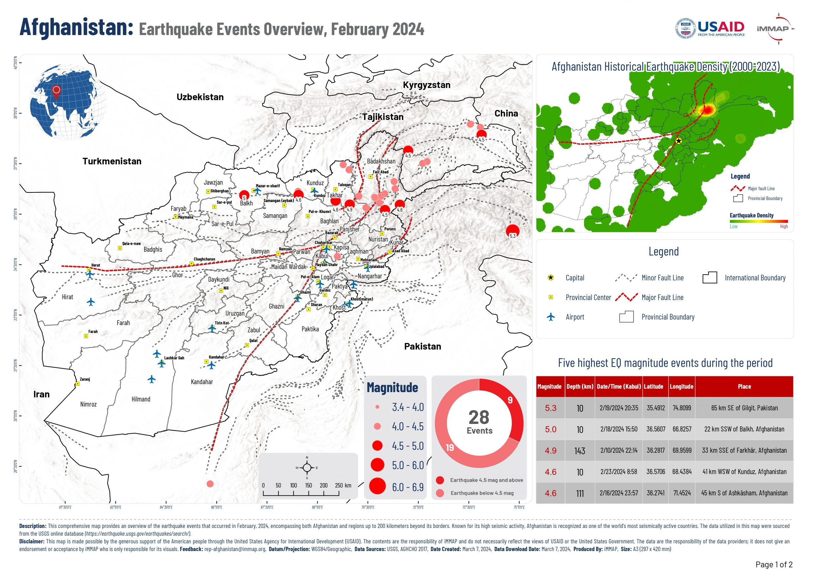
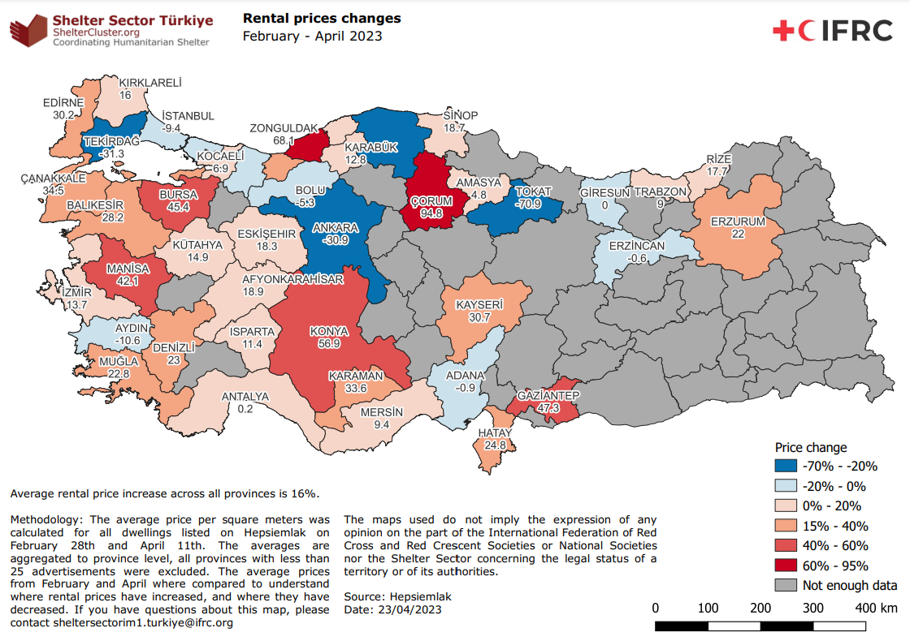
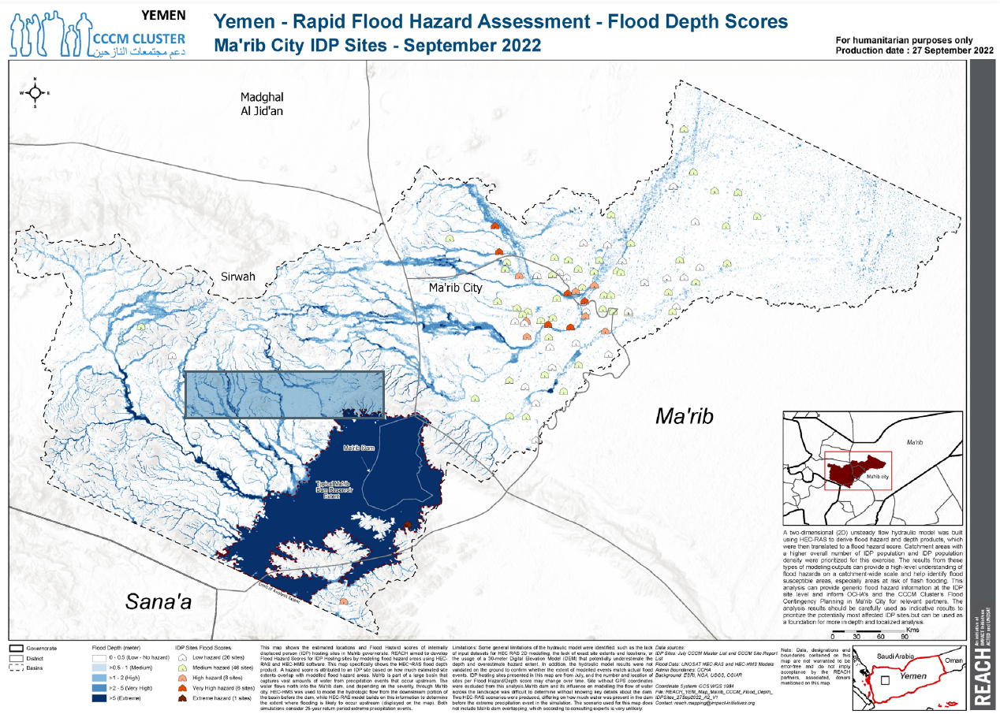

¿Qué es un SIG?#
En esencia, el SIG es un sistema informático para organizar datos con un componente espacial (datos geoespaciales). El SIG tiene tres funciones básicas:
Conexión de datos con mapas
Visualización, organización y procesamiento de datos geoespaciales
Análisis espacial
{kind=link}

Funcionalidad principal del SIG (fuente: HeiGIT).#
En el trabajo humanitario, los Sistemas de Información Geográfica (SIG) sirven como herramientas poderosas. Utilizan mapas para presentar información compleja de manera clara y eficiente. Por ejemplo, durante las emergencias, el SIG puede visualizar eventos en un mapa, representar dónde ocurren, el alcance del impacto y la identificación de las necesidades primarias. Ayuda a consolidar datos de diversas fuentes, lo que permite una rápida comprensión de las situaciones y facilita una mejor toma de decisiones.
Una definición más formal:
Un SIG es una herramienta digital que integra datos con mapas. Permite la recopilación, gestión, análisis y visualización de datos, asociándolos con ubicaciones específicas en la superficie de la Tierra. Al aprovechar los SIG, obtenemos una visión más profunda de los datos, lo que revela los patrones y proporciona una mejor comprensión del contexto geográfico. Esto lleva a un análisis más profundo, una mejor comunicación y en última instancia, facilita una mejor toma de decisiones con base empírica. Los SIG están profundamente arraigados en la geografía, el campo científico dedicado a estudiar los suelos, las características, los habitantes y los fenómenos de la Tierra. El software SIG es capaz de mostrar varios tipos de datos simultáneamente en un mapa, lo que mejora nuestra capacidad para comprender relaciones espaciales complejas.
Componentes de un SIG#
Un SIG es más que un software. Es un sistema e incluye múltiples elementos:
Componentes del SIG (fuente: Cruz Roja Británica)#
Ejemplos del SIG utilizados por organizaciones humanitarias#
Para comprender mejor cómo se utiliza el SIG en el sector humanitario, hemos recopilado algunos ejemplos de diferentes organizaciones en la siguiente sección (haga clic en las diferentes pestañas para ver los ejemplos por organización).
Este video ofrece un resumen del uso del SIG en la Cruz Roja Libanesa en sus operaciones, incluida la información a los servicios de ambulancia y el apoyo a las donaciones de sangre.
La Federación Internacional de Sociedades de la Cruz Roja y de la Media Luna Roja (IFRC) publica una amplia variedad de mapas para apoyar las operaciones activas. Puede encontrar algunos de ellos en ReliefWeb o en las Páginas de emergencias de la plataforma IFRC GO de la IFRC.
El Comité Internacional de la Cruz Roja (CICR) cuenta con una Unidad de Apoyo en SIG, que gestiona su Centro de Recursos SIG y su portal ICRC GeoPortal. La cartera del centro de recursos del CICR da una idea de los tipos de análisis que produce la unidad de SIG, aunque gran parte de ellos, no son públicos.
La Iniciativa REACH es una ONG de recopilación y análisis de datos humanitarios, que tiene una sólida especialización en los SIG. El Centro de recursos de REACH es donde la organización publica contenido, que incluye mapas independientes e informes que también suelen incluir mapas y análisis espaciales.

Mapa de ejemplo: REACH, Ucrania, Monitoreo de Sitios Colectivos de Desplazados Internos (CSM), mapa, Sitios activos, febrero de 2024. Fuente: REACH#
Médicos Sin Fronteras (MSF) cuenta con una Unidad SIG que publica productos geoespaciales en la plataforma GeoMSF para apoyar las actividades de MSF.
MSF utiliza el SIG en cuatro áreas principales:
Operaciones, preparación y respuesta ante emergencias
Atención médica
Promoción, comunicación y presentación de informes
Salud ambiental
Este breve video describe el papel de los SIG en la respuesta de MSF al brote de ébola de 2015 en Sierra Leona.
El Programa Mundial de Alimentos (PMA) produce mapas y publica datos geoespaciales, tanto en su propia plataforma de datos: WFP Geonode como en el Intercambio de Datos Humanitarios (HDX). Puede encontrar los mapas publicados por el PMA en RelifeWeb. El Catálogo de actividades geoespacialesdel PMA presenta los servicios geoespaciales de la organización, lo que incluye el desarrollo de tableros como este asistencia en efectivo durante la pandemia de COVID-19 en Jordania.
El PMA también crea tableros para la promoción, como HungerMap Live:
iMAAP es una ONG de gestión de la información que brinda apoyo a la Organización de las Naciones Unidas (ONU) y a organizaciones internacionales sin fines de lucro. Su cartera de productos incluye ejemplos de mapas utilizados en descripciones generales de situaciones, tableros interactivos y análisis específicos del sector.
{kind=link}

Mapa de ejemplo: Descripción general de los eventos sísmicos en Afganistán, febrero de 2024 (fuente: iMMAP).#
MapAction produce mapas y datos geoespaciales que apoyan la toma de decisiones en la respuesta a emergencias. Su página demapas y datos muestran los productos recientes que han publicado y su catálogo de productos. Ofrece una visión general de los tipos de servicios que prestan.

Mapa de ejemplo: Filipinas, Tormenta tropical severa Washi (conocida como Sendong), población en centros de evacuación y sitios transitorios, Cagayán de Oro (fuente: MapAction).#
{kind=link}
Los SIG vs. la cartografía#
La cartografía es el arte y la ciencia de crear mapas, que abarca el estudio y la práctica de las técnicas de elaboración de mapas. Un SIG representa una evolución moderna de la cartografía tradicional,que integra las tecnologías y los métodos avanzados para el análisis y visualización de datos geoespaciales.
Si bien, tanto la cartografía como los SIG implican la creación de mapas, difieren significativamente, en cuanto a sus capacidades y enfoques. Los mapas cartográficos suelen presentar una representación simplificada de las entidades geográficas, restringida por las limitaciones del espacio físico y el medio del propio mapa. Por el contrario, el SIG permite la integración de grandes cantidades de datos geoespaciales, lo que permite un análisis, modelado y visualización complejos, más allá del alcance de la cartografía tradicional.
Una distinción clave es que el SIG facilita la incorporación de diversos conjuntos de datos, con una capacidad prácticamente ilimitada para capas e información adicionales. Esta flexibilidad faculta a los usuarios para realizar análisis espaciales, realizar evaluaciones estadísticas y obtener información para respaldar los procesos de toma de decisiones.
En esencia, mientras que la cartografía se enfoca principalmente en el diseño y la visualización de mapas, el SIG se extiende, más allá, para abarcar la gestión, el análisis y la interpretación de datos geoespaciales. Por lo tanto, un SIG sirve como una herramienta poderosa para que los cartógrafos y los profesionales de diversos campos, creen, analicen y extraer conclusiones de la información geográfica
¿Qué es el análisis espacial?#
Muchos productos de mapas dependen del análisis espacial. Y efectivamente, la capacidad de utilizar herramientas de análisis nos permite sacar el máximo provecho de los datos que tenemos y resolver una gran variedad de problemas. Los puntos, a continuación, brindan una definición simple del concepto.
Sin embargo, el ejemplo del mapa del cólera de John Snow de 1854 es un ejemplo popular de cómo el análisis espacial puede ayudar a resolver problemas.
El análisis espacial estudia entidades y eventos con el uso de sus propiedades topológicas, geométricas o geográficas.
Incluye una variedad de técnicas para analizar los datos geográficos.
Los datos pueden añadirse a un mapa como capas y pueden interactuar entre sí.
El sistemas de Información geográfica (SIG) le permite trabajar con estas capas para explorar preguntas de importancia crítica y encontrar respuestas a esas preguntas.
Un ejemplo del pasado: Mapa del cólera de John Snow#
En 1854, un brote de cólera ocurrió en el área de Soho en Londres, Inglaterra. La teoría más común era que la enfermedad se propagaba por el aire. El Dr. John Snow creía que el peligro estaba en el agua. Hizo un mapa para analizar el número de decesos en todos los bloques habitacionales en Soho. Agregó la ubicación de las bombas de agua en el mapa. Encontró una correlación entre una bomba de agua específica y el número de infecciones.
El mapa del brote de cólera de 1854 del Dr. Snow (John_snow_zoom_map2) y los informes, que lo acompañaron, __ ganó sobre la predominante “Teoría del Miasma”__ de que la enfermedad se propagó por el aire. Fue así que se advirtió a los residentes de que debían hervir el agua y así terminó el último brote de cólera, que Londres ha visto.
Esta versión interactiva del mapa del cólera, lo muestra superpuesto con un mapa base del Londres moderno.

Mapa del cólera en Londres de John Snow (1854).#
Al usar el SIG, se han aplicado varias medidas de tendencia espacial central al conjunto de datos, lo que revela que la media espacial (el centro geográfico de la distribución de los decesos) del brote se encuentra a menos de 35 metros de la bomba de Broad Street, identificada como la fuente de contaminación en el brote de 1854.
Tipos comunes de mapas en la respuesta humanitaria#
Note
El sector humanitario tiende a utilizar ciertos tipos de mapas con regularidad. Estos se describen a continuación.
Mapas de referencia general#
Muestran las entidades físicas importantes de un área
Incluyen entidades naturales y artificiales
Por lo general, se utilizan para ayudar en la navegación o el descubrimiento de ubicaciones
Por lo general, son bastante sencillos
Su estilo puede adaptarse al público al que van dirigidos

Mapa de ejemplo: Nigeria: Mapa de referencia del estado de Ogún al 26 de diciembre de 2018 (fuente: OCHA).#
Mapas de infraestructura#
Los mapas de infraestructura en el contexto humanitario proporcionan representaciones visuales de infraestructura crítica como carreteras, puentes, hospitales y servicios públicos en un área determinada. Estos mapas ayudan a las organizaciones humanitarias a evaluar la accesibilidad de las zonas afectadas, planificar los esfuerzos de ayuda y coordinar los recursos, de manera eficaz, durante las emergencias o los desastres.
Muestran las entidades y las estructuras relevantes en un área específica
Ayudan a la planificación y en la navegación
Alto nivel de detalle
Producidos después de la recopilación de datos en el campo

Mapa de ejemplo: Nigeria - Estado de Borno - Campamento Mogcolis, Infraestructura General - Actualizado el 24 de julio de 2017 align: center (Source: REACH)#
Mapas temáticos#
Los mapas temáticos muestran temas o asuntos específicos, como la densidad de población, los brotes de enfermedades o los niveles de vulnerabilidad dentro de un área geográfica. Estos mapas ayudan a las organizaciones humanitarias a analizar y comprender los problemas o las tendencias específicas, que guía la toma de decisiones y la asignación de recursos para intervenciones específicas y esfuerzos de ayuda humanitaria.
Se centran en un asunto o tema específico
Las entidades geográficas en los mapas representan al sujeto mapeado
Usan colores y formas para mostrar los datos cuantitativos y cualitativos
Crear conciencia sobre un tema específico
{kind=link}

Mapa de ejemplo: Sector de refugios en Turquía: Cambios en los costos de la renta, de febrero a abril de 2023 (fuente: IFRC).#
Mapas de análisis#
Los mapas de análisis se utilizan para examinar e interpretar datos, lo que revela los patrones, las tendencias y ñas relaciones dentro de un área geográfica. Facilitan una comprensión profunda de situaciones complejas, lo que permite a los responsables de la toma de decisiones, extraer conclusiones y tomar decisiones fundamentadas para lograr respuestas humanitarias eficaces.
Analizan datos con respecto a su ubicación geográfica
Crean nuevas capas de información a partir de la interacción entre múltiples entidades geográficas
Utilizan colores y formas para ayudar a los usuarios a comprender eventos específicos
Apoyan a los responsables de la toma de decisiones
Generalmente, muestran un mayor nivel de detalle
{kind=link}

Mapa de ejemplo: Grupo temático de coordinación y gestión de campamentos en Yemen, REACH, Peligro de inundación en sitios colectivos de desplazados internos, gobernación de Marib, Modelo de profundidad de inundación (fuente: REACH).#
Mapas de situación/descriptivo#
Los mapas descriptivos o de situación proporcionan un panorama de las condiciones o los eventos específicos en un área geográfica, en particular. Visualizan información clave como la ubicación de los recursos, la distribución de la población, la infraestructura y los factores ambientales. Estos mapas ofrecen una visión clara de la situación actual, lo que ayuda a la comprensión y la comunicación entre las partes interesadas, involucradas en las operaciones humanitarias.
Se utilizan para visualizar mejor una situación específica en curso y/o anterior
Los mapas pueden incluir elementos narrativos y gráficos
Se pueden utilizar en informes y/o para crear conciencia sobre un evento específico

Mapa de ejemplo: Alto Comisionado de las Naciones Unidas para los Refugiados (ACNUR), Perfil de la población de Irak, desglose detallado, Registro de Personas Refugiadas sirias diciembre de 2023 (fuente: ACNUR).#
Preguntas de autoevaluación#
Ponga a prueba sus conocimientos
Tómese un momento para reflexionar sobre lo que ha aprendido en este módulo. Las siguientes preguntas están diseñadas para ayudarlo a comprobar su comprensión de los conceptos clave e identificar áreas, que quisiera revisar más a fondo. No es necesario que envíe sus respuestas, esto es para su propio aprendizaje.
¿Cuáles son las tres funciones básicas de los SIG?
Respuesta
Un SIG es un sistema para capturar, manipular, analizar y visualizar los datos geoespaciales. Las tres funciones básicas son:
Captura de datos: crear (o digitalizar) los datos geoespaciales.
Análisis: realizar análisis o procesar datos geoespaciales para obtener información o conocimiento.
Visualización: Visualizar los datos geoespaciales en mapas, gráficos o informes para comunicar la información
¿Qué es el análisis espacial y cómo utilizó John Snow el análisis espacial en su mapa del brote de cólera de 1854?
Respuesta
El análisis espacial es el proceso de examinación de los datos geográficos (espaciales) para detectar patrones, relaciones, tendencias y estructuras espaciales. Implica operaciones como superposición, establecer zonas de influencia, proximidad, agrupación, interpolación y evaluación de cómo varían los fenómenos en el espacio.
En 1854, el Dr. John Snow mapeó las ubicaciones de los decesos por cólera en Londres (distrito de Soho) junto con las ubicaciones de las bombas de agua. Notó que los casos de cólera se agrupaban alrededor de una bomba en particular (en Broad Street). Debido a que había una agrupación espacial alrededor de esa bomba, planteó la hipótesis de que el agua de esa bomba, era la fuente del brote. Luego convenció a las autoridades de que quitaran la palanca de la bomba, tras ello, el brote disminuyó. En efecto, utilizó la distribución espacial y la agrupación de incidentes de enfermedades para inferir una relación causal. (Este es un ejemplo clásico y antiguo de la aplicación del análisis espacial en la epidemiología). Su mapa mostró que los decesos no se distribuyeron al azar, sino que se concentraron, espacialmente, alrededor de una fuente de agua, lo que es la esencia del razonamiento espacial
Nombre los cinco tipos comunes de mapas utilizados en el trabajo humanitario.
Respuesta
Mapas de referencia general: Muestran las entidades geográficas generales como los caminos, los ríos y los límites administrativos; se utilizan para la navegación y la orientación
Mapas de infraestructura: Mapas temáticos centrados en la infraestructura física (p. ej.: hospitales, puntos de abastecimiento de agua, caminos); utilizados para la planificación y la logística.
Mapas temáticos: Representan un tema o conjunto de datos específico (p. ej.: población, lluvia, conflicto); utilizan colores, formas o símbolos para visualizar los atributos no espaciales.
Mapas de análisis: Son el resultado del análisis espacial para guiar la toma de decisiones (p. ej.: zonas de riesgo por amenazas, modelos de idoneidad).
Mapas de situación: Proporcionan una visión general de una situación humanitaria o de emergencia; muestran zonas afectadas, actividades operacionales o evaluaciones de las necesidades.